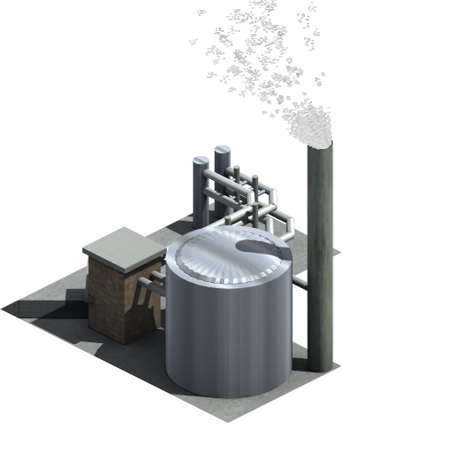

3D Work
As you may (or may not) know, OpenTTD is slanted to get 32 Bit Per Pixel graphics in version 0.6. This will allow us the full range of colours the average graphics card is able to represent. As part of this, the size of each graphic is being changed to 128x128px or even potentially 256x256px. As such, all new graphics are being made in 3D, in a program called Blender.
I have been doing some 3D work on a model I hope to get included in this pack. At the moment I am still learning all the ropes in Blender, so not everything is as good as I would like it yet, but I am working on improving it.
Currently my primary focus is going to be on how to remove the shadows on the joints, and then possibly detailing it (I’m debating the inclusion of a compressor motor in some of the free space).
The building itself will be built by the town, and there are 2 possibilities for it:
- Industry: (Built like the bank) Accepts natural gas, produces nothing. Ammount of white smoke emmited differs: If nothing provided, none, if some provided, a small ammount, if oversupplied, a large ammount
- Building: A building that will be built on the town’s outskirts.
In either case, the first one should be built at arround 1,500 population and a seccond at arround 10,000. No more should be built after that. Players will have to be cautious of the town expanding and demolishing the industry.
Anyway, heres the picture:

Categories: OpenTTD